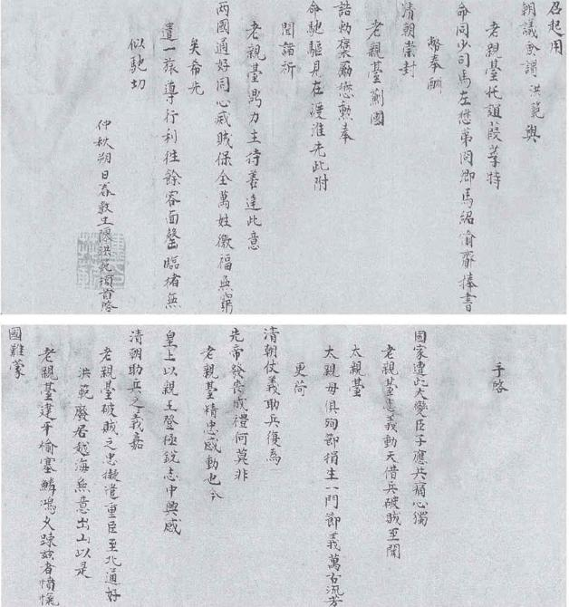
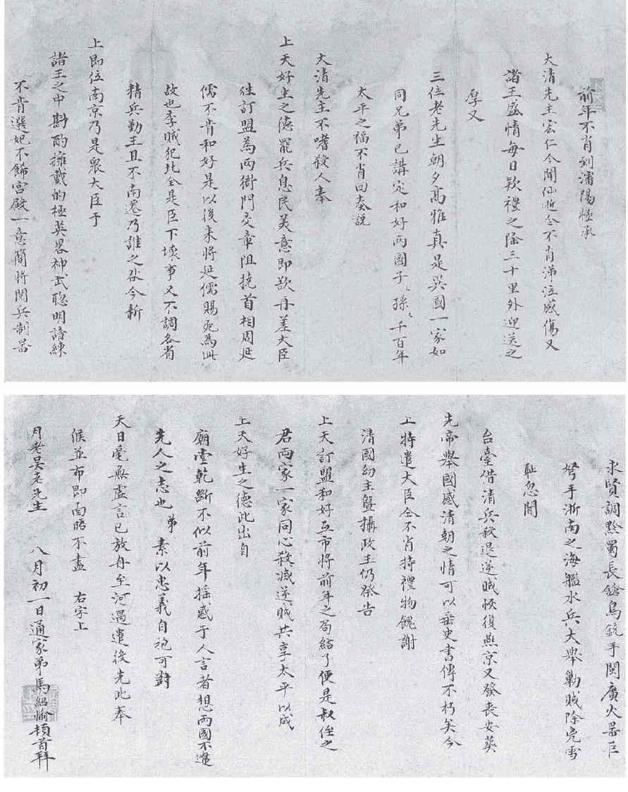

二
关于甲申国变后明、清间关系，今天大概没有人不以为处在敌对之中。我曾访问过网上一些明史爱好者的论坛，随处可见以满清为仇雠的情绪，这固然折射了当下的民族主义社会思潮，但显然也由于对那段历史怀有一种理解或想象，觉得站到明朝立场上，势必如此。
然而我可以肯定，明朝当时情绪并非如此。不但如此，明朝对满清的真实心态，还是今天很难想象的。
简而言之，在明朝眼里，满清不是它的敌人。虽然乙酉之变（朱由崧被俘以及南京陷落）之后又当别论，但终讫弘光一朝，明朝确未以满清为敌，无论政治、军事、外交上，还是情感上。诚然，当时对满清以“虏”、“酋”、“腥羶”相称，而予以文化和种族的歧视，但这与进入国家间敌对状态不是一码事。
置身二十一世纪，用现代眼光看，确实无法搞懂这种关系。这就是为何先前我们要专门强调，并非一切历史都是“当代史”。明人有他们自己的观念，他们的国家伦理处于另一体系。横亘于我们与他们之间两个多世纪的时光，会造成历史内容的诸多落差。
我们借一个著名人物，观察历史落差可以大到什么地步。
经教科书的讲述以及若干文艺作品的渲染，我们心中关于明清代际转换，往往以清兵入关为重要的时间窗。而此事件，又与一个“卖国贼”形象紧密相连。此人非他，辽东总兵、平西伯吴三桂是也。他被描述为在山海关引狼入室，叛变投敌。今天，若以“吴三桂”三字询诸国人，必曰“民族败类”、“汉奸典型”。
然而，这却只是我们的看法。在整个弘光朝，吴三桂拥有正面的形象，事实上，他被看做功臣和英雄。尽管山海关自他手中献出，然后又作为先锋引多尔衮入京，南京上下却不以此为多大的罪恶。后者看重的，是他联手清兵、击溃李自成，为崇祯皇帝报了仇。那时，人们普遍认为，平西伯真正尽到了对于君主的义务，是为人臣者之表率。五月末，户部侍郎贺世寿在其奏疏中，正是这样评价吴三桂，同时抱怨其他武将的渫黩：
如吴三桂奋身血战，仿佛李、郭（指唐将李光弼与郭子仪，二人以平安史之乱垂诸史册），此乃可言功拜爵，方无愧色。若夫口头报国，岂遂干城，河上拥兵，曷不敌忾！[5]
这完全不能说服我们。作为现代人，不妨谅解古人奉守忠君之道，而引狼入室却另当别论。吴三桂之为我们不齿，主要在后者。而令人意外的是，当时评论几乎不曾涉及这一点，就好像那是一个盲点。
问题出在哪儿呢？
在多尔衮致史可法那封著名信件中，关于吴三桂，作者引用了一个中国典故：“独效包胥之哭”[6]。故事发生在春秋末年。公元前506年，伍子胥率吴国大军攻破郢都，楚大夫申包胥“走秦告急，求救于秦”，“昼夜哭，七日七夜不绝其声”，秦哀公终为所动，“乃遣车五百乘救楚击吴。”[7]假如我们为明人对吴三桂“引狼入室”无动于衷感到困惑，可以到这典故中寻找答案。

弘光使团陈洪范致吴三桂信。
陈洪范，时任左都督，弘光朝组成以左懋第为首的北京使团，陈洪范、马绍愉副之。此信系使团渡过淮河前，陈洪范写给吴三桂的，意在沟通。信中“清朝仗义助兵，复为先帝发丧成礼，莫非老亲台精忠感动也”一句，表明了明朝的官方态度。

弘光使团马绍愉致吴三桂信。
马绍愉，太仆寺少卿，弘光使团副使。此信除感戴清朝、称赞吴三桂与陈洪范信同，还提到要与满清“两家一家，同心杀灭逆贼，共享太平”。
古时，国家“主权”概念，既不强烈，也不精密。申包胥的行为，置诸今日，非落个乞求外国势力干涉本国内政的骂名，古人却目为忠义救国之举，垂范后代，流芳千古。这就是为何吴三桂洞开国门、导异国之军入境这样一幅图景，在我们和明人那里唤起的联想会大相径庭。我们所想到的，大概是《地道战》“鬼子进村”中胖翻译官一类形象，古人脑海浮现的却是昼夜哭于秦庭的申包胥。
假如只是多尔衮把吴三桂比附于申包胥，我们不妨嗤之以鼻，只当他巧舌如簧。问题在于，明朝人士持有完全相同的评价：
吴三桂一武臣耳。至割父子之亲，甘狄之俗，反仇作援，辱身报主，卒挫狂锋，逐凶逆，此申包胥复楚之举也。[8]
申包胥典故，是中国话语，不是满清话语，多尔衮不过是鹦鹉学舌，他了解这种话语在中国的正面性和有效性。而他对中国思维的理解，颇中鹄的。关于吴三桂邀清兵击退李自成，明朝果然解读为申包胥第二，是救国的忠臣，而非叛国的逆臣。他这一形象的终结，将一直等到顺治后期率军进攻云贵等地，尤其是在缅甸亲手俘获永历皇帝朱由榔的那一刻。
甲申五月二十八日，弘光登基当月，明朝决定晋平西伯吴三桂为蓟国公，“给诰劵禄米，发银五万两、漕米十万石，差官赍送。”[9]
六月二十三日（1644年8月7日），朱由崧就与满清关系及交涉等，召对内阁成员，共讨论了七件事，第二件便有关吴三桂，对他引清军入关给出四字评语：“仗义购虏”。[10]“购”，通“媾”，即讲和、和解之意。这四个字，可以视为官方对吴三桂问题的正式结论。它不单给予吴三桂本人以完全肯定（“仗义”），同时以一个“购”字，追认和确认吴与满清的合作，符合朝廷的意愿。稍后，朝廷向北京派出高级使团，使命之一，正是当面嘉奖吴三桂。
总之，退回明朝语境，吴三桂头上非但没有“卖国贼”帽子，反倒顶着“忠义”的光环。他的汉奸地位是以后形成的，是历史话语转换中重新叙述的结果。这个例子说明，在不同时代，历史视阈之别可能判若云泥。